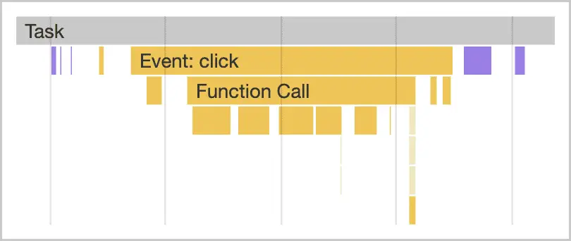

短答
长任务是一段主线程工作，它使浏览器无法响应输入。
分析器显示任务、处理函数和下面的渲染。把一个长任务拆成会让出时间的小段，输入就可以插在中间运行。SEO 健康记录模板在一次样例交互上有长任务。它不为一家公司公布时长，这张图也不是那种公布。
定义
长任务和交互到下次绘制有关，因为输入要等到任务让出。它们和一张大图不是同一条记录。只压缩图片的团队，缩短不了解析巨大脚本或为巨型表格重算样式的任务。
健康检查里怎么使用这个定义
在买家使用的交互上找出长任务，并拆开或推迟那项工作。
对数千个 DOM 节点重算样式是常见形态，在以 DOM 规模为主题时会再讲。第三方脚本是另一种形态。记录应该点名形态，修复才明显。“改善 INP”不是修复。“每次筛选点击时不要把对比表构建两次”才是。

要检查什么
- 碰上长任务的买家交互
- 工作是脚本、样式还是布局
- 让出时间或减少工作的修复，而不是口号
- 一条样例 URL 和交互名称
- 没有把编造的时长当作结果
一个结构示例
一次筛选点击在一个任务里重建 2000 行的表。处理函数可以只更新变化的行，或在块与块之间让出时间。健康样例是该筛选 URL 和任务调用栈的描述，没有编造的毫秒徽章。
它不声称什么
拆开长任务不保证排名或引用。
Mika Visibility 把它归到哪里
Mika Visibility 把它归在 SEO 健康：线上站点在技术上是否准备好被发现和理解。SEO 增长仍是关于覆盖和意图的另一个问题。GEO 健康与 GEO 增长保持各自的尺度。一条加载或响应性记录不会自动变成增长分数，也没有混合总分。
分析器图显示任务的形态，因此文章可以点名修复而不给出现场百分位。
常见问题
什么是长任务？
长任务是一段主线程工作，它使浏览器无法响应输入。
应该识别什么？
在买家使用的交互上找出长任务，并拆开或推迟那项工作。
拆开任务能保证排名吗？
拆开长任务不保证排名或引用。
下一步
做一次结构化的 SEO + GEO 审计，查看健康发现、增长缺口和可以执行的蓝图。
更清晰的实体、答案、证据和上下文，会让页面更容易被理解与引用。任何回答产品中的结果都不作保证。